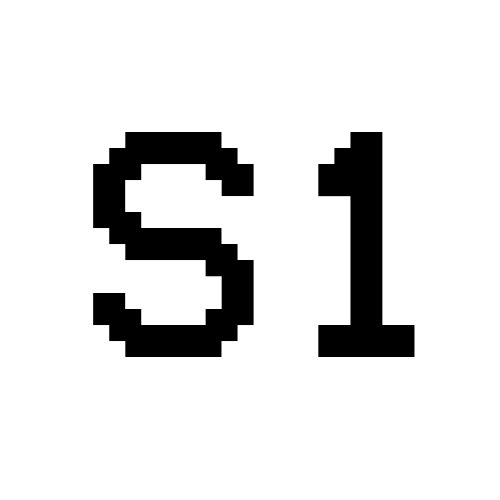

Local database and streaming backend
Starting…
Starting…
Checking…
—
New database: pick an empty folder — the first login in STREAM1 App becomes admin.
Existing: choose the folder that contains stream1-secrets.json.
Closing this window keeps STREAM1 running in the system tray (near the clock). Right-click the tray icon to quit.
Edit .env in the database folder (or next to the exes), then reload so URL changes
(remote control tablet, volume panel, OAuth, etc.) take effect without reinstalling.
Loading logs…